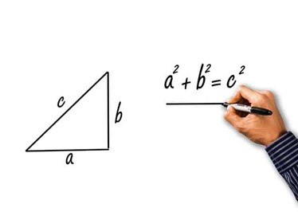
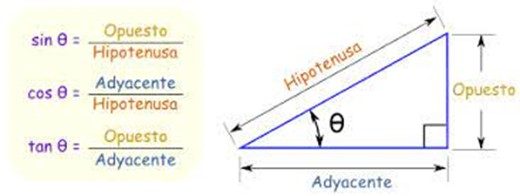
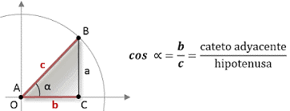

El coseno y la trigonometría
Estos conceptos pertenecen a la rama de las matemáticas conocida como
trigonometría, la cual se enfoca en el análisis de las denominadas razones
trigonométricas, entre las cuales se encuentran las siguientes cuatro,
además del seno y el coseno: tangente, secante, cotangente y cosecante.
En el colegio secundario, la trigonometría suele incluirse en la última etapa
del programa, ya que se trata de una parte muy compleja y difícil de entender
para quienes no poseen un gusto legítimo por los números.
Su intervención en el resto de las ramas de las matemáticas a veces es directa,
y otras veces, indirecta; a grandes rasgos, podemos decir que su aplicación
tiene lugar siempre que se vuelve necesario realizar mediciones con un
alto grado de precisión.

La ley de cosenos es una generalización del teorema de Pitágoras.
Ley de cosenos
La ley de cosenos, que también se conoce como el teorema del coseno,
es una generalización del conocido teorema de Pitágoras.
Se trata de la relación que se puede establecer entre uno de los lados
de un triángulo rectángulo con los dos restantes y con el coseno del
ángulo que éstos forman.
En un triángulo ABC, con los ángulos α, β, γ, y los lados a, b, c
(opuestos a los anteriores, en orden respectivo),
el teorema del coseno se puede definir como se aprecia en la imagen:
c elevado al cuadrado es igual a la suma de a al cuadrado y
b al cuadrado, menos el doble del producto ab cos γ.

Funciones
Otra forma de definir el coseno consiste en entenderlo como:
-
Una función par: en matemáticas, esta clasificación la reciben las funciones de variable real
tomando en cuenta su paridad.
Existen tres posibilidades: pueden ser pares, impares o bien no tener paridad;
-
Una función continua: se trata de una función matemática en la cual los puntos cercanos
al dominio acarrean una serie de variaciones pequeñas en sus valores;
-
Una función trascendente: es una función que no puede satisfacer una ecuación polinómica
con coeficientes que sean polinomios (un polinomio es una expresión compuesta por
una suma de productos de constantes y variables entre sí).

tomando en cuenta su paridad.
Existen tres posibilidades: pueden ser pares, impares o bien no tener paridad;
al dominio acarrean una serie de variaciones pequeñas en sus valores;
con coeficientes que sean polinomios (un polinomio es una expresión compuesta por
una suma de productos de constantes y variables entre sí).